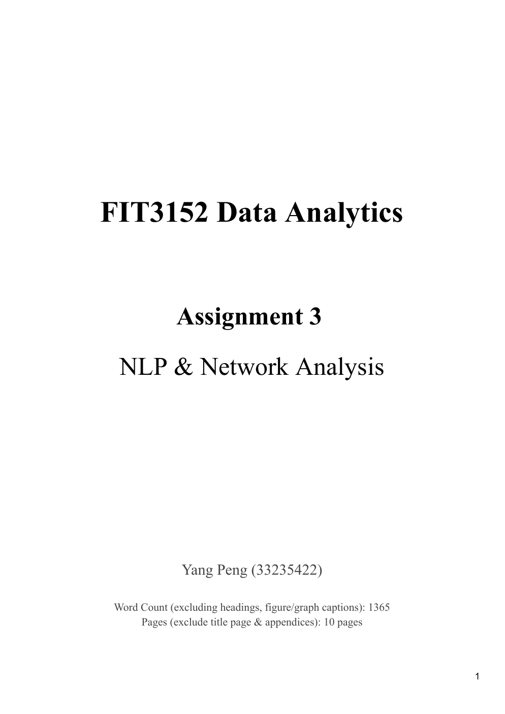
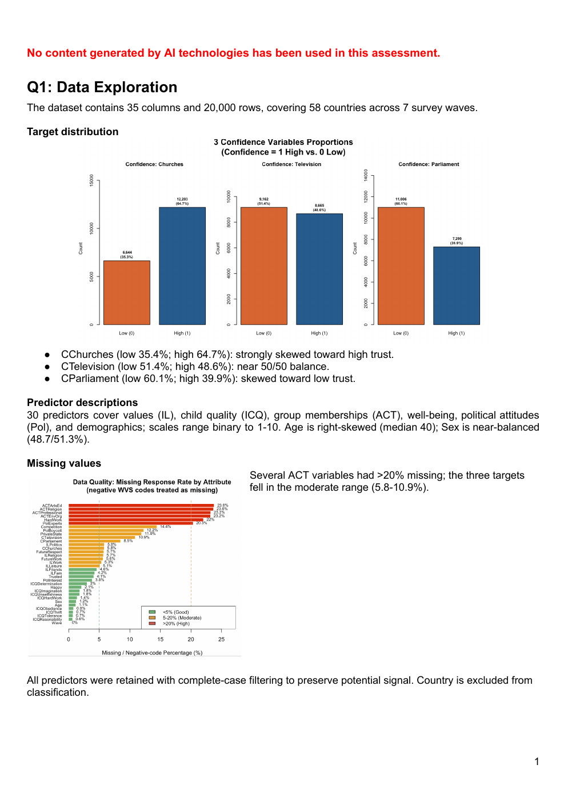
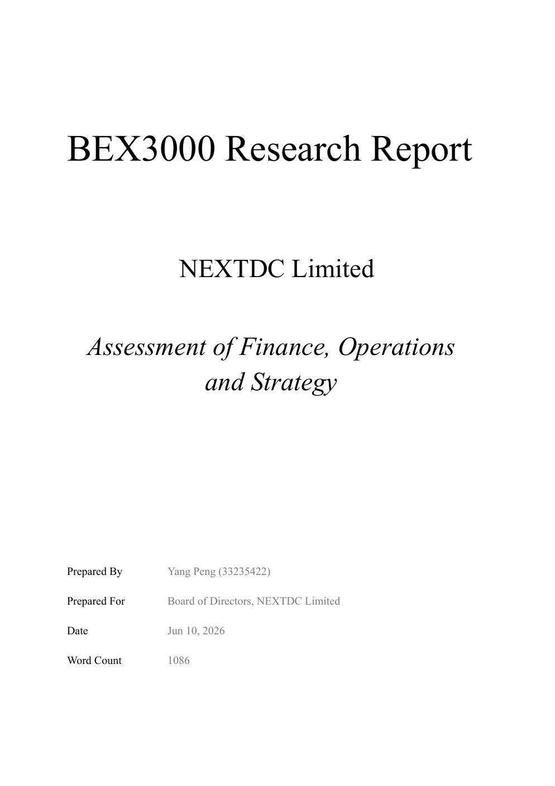
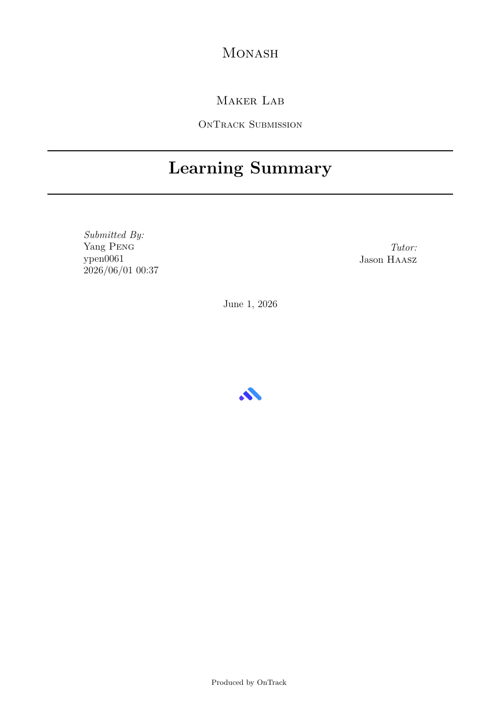
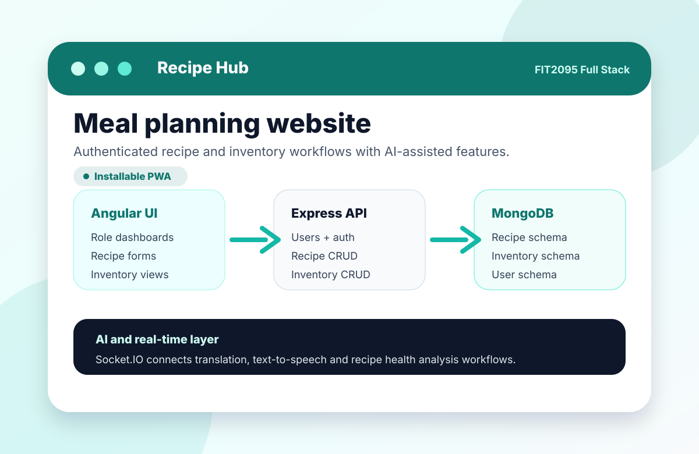
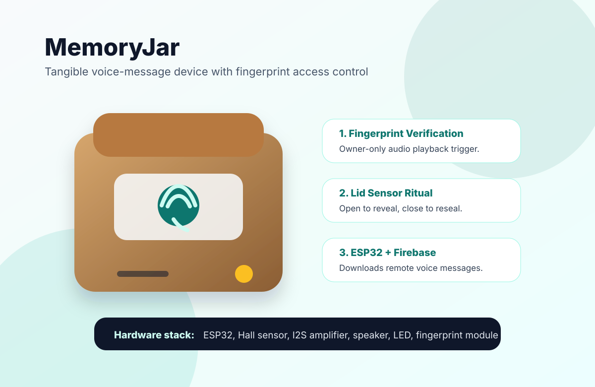

PDF document
Unofficial
Open full PDF
Melbourne, Australia
Yang Peng
Data Analytics & Software
About
About Me
I am a final-year Business and Information Technology student at Monash University with a passion for using data and technology to solve real-world business problems.
I believe value comes from making work simpler, more efficient, and more meaningful. Whether it is analysing data, improving a process, understanding user needs, or supporting a team in solving a problem, I enjoy finding practical ways to help people work better and organisations make more informed decisions.
Rather than limiting myself to a specific role or technology, I am always open to learning new skills, exploring different industries, and taking on unfamiliar challenges. I enjoy collaborating with others, adapting to new environments, and contributing wherever I can make a positive impact. My goal is to continuously learn, solve meaningful problems, and help organisations improve the way they work.
The projects below demonstrate how I approach challenges, think analytically, and apply technology to deliver practical, user-focused solutions.
Visa Status
I currently hold a Student visa (subclass 500). After graduation, I plan to apply for a Temporary Graduate visa (subclass 485), subject to eligibility and Australian immigration requirements.
Languages
Data / Analytics
Business / Design
Tools
Verified study record
Unofficial Academic Record
Please find attached my Monash University academic record, exported directly from the university's official Web Enrolment System (WES). Please note this is the unofficial version, provided for initial reference.
Should you require an official, certified transcript at the offer stage, I can request one from Monash immediately and have it sent to you directly. My degree is a Bachelor of Business (Major: Banking and Finance), Student ID 33235422, available for verification.
Selected work
Projects
Coursework, industry experience and prototype projects drawn from the work files on this machine. Report links point only to my own deliverables, not assignment specifications or lecture materials.
Data analytics & machine learning
02 projects
FIT3152 · Text mining + networks
Text Analytics of Australia's Energy Sector
An R text-mining pipeline over 23 documents from four source genres, turning raw renewable-energy text into clustering, sentiment and network insight.
- Built a Document-Term Matrix with domain phrase merging, stemming and sparsity pruning reduced to approximately 25 key tokens.
- Applied cosine-distance + Ward.D hierarchical clustering of documents and evaluated cluster purity.
- Ran Loughran-McDonald sentiment analysis by genre with Kruskal-Wallis and pairwise t-tests.
- Built document similarity, token co-occurrence and bipartite document-token networks with ggraph.

FIT3152 · Machine learning
Social Organisation Confidence Classification
Python machine-learning workflow using cleaned survey data to classify public confidence in churches, television and parliament.
- Pre-processed survey data into 9,756 clean rows and 31 predictors.
- Compared decision tree, Naive Bayes, bagging, boosting and random forest classifiers.
- Reported confusion matrices, accuracy, precision, recall, F1, ROC/AUC and variable importance.
Business & financial analysis
01 project
BEX3000 · Research report
NEXTDC Finance, Operations and Strategy Assessment
Board-style research report assessing NEXTDC's position across finance, operations and strategy in the AI-ready data-centre infrastructure market.
- Assessed growth exposure from AI, cloud computing, digitalisation and hyperscale data-centre demand.
- Analysed financial constraints including liquidity, debt-funded expansion and interest-cover pressure.
- Built supporting SWOT, PESTLE and Porter Five Forces appendices for structured strategic assessment.
UI/UX & human-centred design
02 projectsFIT3047 · Industry experience
RespiraCare Health-Support Web Application
CakePHP digital-health platform supporting COPD education, clinician workflows, vitals tracking and AI-assisted decision support.
- Worked as team coordinator across stakeholder communication, requirements documentation and team alignment.
- Contributed UI/UX and accessibility thinking, including WCAG contrast, keyboard navigation and screen-reader considerations.
- Supported CakePHP implementation areas including vitals workflows, contact messages, password reset, cookie consent and AI decision-support reflection.

Maker Lab · Portfolio
FIT3146 Maker Lab Portfolio
Complete Maker Lab portfolio documenting hands-on prototyping, electronics integration, human-centred design and reflective learning across the semester.
- Documented a full semester of prototype development, experimentation and design iteration.
- Reflected on electronics integration, hardware debugging and user-centred design decisions.
- Included the audio-device concept with fingerprint authentication as part of the broader Maker Lab portfolio.
Full-stack & IoT software
02 projects
FIT2095 · Full-stack web app
Recipe Hub Full-Stack Application
Angular and Express recipe-management application with role-based workflows, inventory tracking, real-time services and AI-assisted recipe features.
- Built an Angular front end with authenticated user flows for chefs, managers and admins.
- Designed Express/MongoDB APIs for recipe, user and inventory CRUD operations.
- Integrated Socket.IO workflows for Google Translate and Text-to-Speech services.
- Added AI-supported health analysis for recipes based on ingredients and recipe context.

FIT3146 · IoT prototype
Audio Device with Fingerprint Authentication
MemoryJar concept for a tangible voice-message device where opening a physical box plays remote audio, with fingerprint verification proposed as a personalised access-control layer.
- Designed a ritualised audio interaction for international students, long-distance couples and people living away from family.
- Specified ESP32, Hall effect sensor, MAX98357A I2S amplifier, compact speaker, LED notification and Firebase-backed message delivery.
- Proposed fingerprint verification so only the registered owner can trigger audio playback.
Contact
Let's connect.
If my work looks relevant to your team, project, internship or graduate opportunity, I would be glad to hear from you.